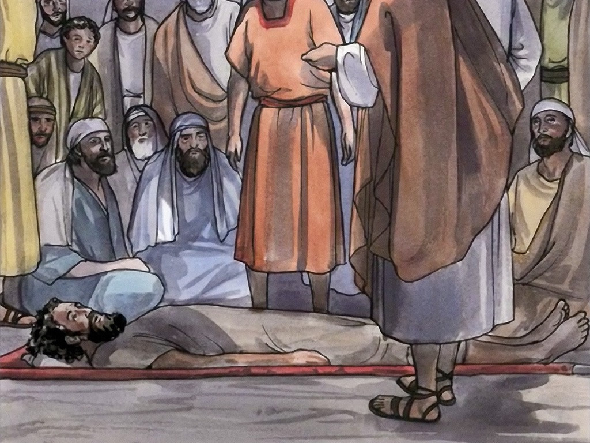
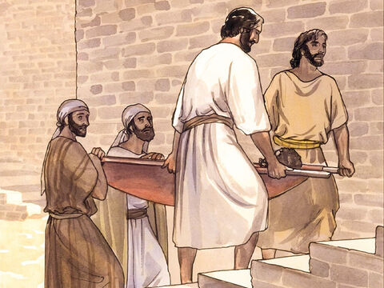

Lord Jesus Forgives And Heals A Paralyzed
And he entered into a ship, and passed over, and came into his own city.
And, behold, they brought to him a man sick of the palsy, lying on a bed:
and Jesus seeing their faith said unto the sick of the palsy; Son, be of good cheer;
thy sins be forgiven thee.
And, behold, certain of the scribes said within themselves, This man blasphemeth.;
And Jesus knowing their thoughts said, Wherefore think ye evil in your hearts?
For whether is easier, to say, Thy sins be forgiven thee; or to say, Arise, and walk?
But that ye may know that the Son of man hath power on earth to forgive sins,
(then saith he to the sick of the palsy,) Arise, take up thy bed, and go unto thine house.
And he arose, and departed to his house.
Matthew 9:1-7
- 
- 